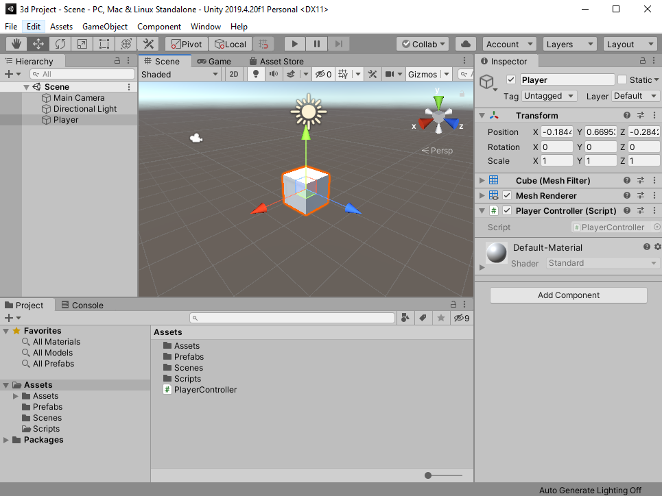
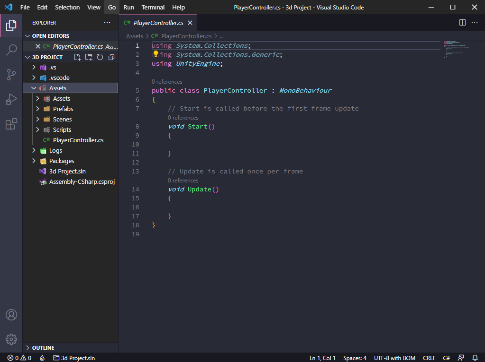

Agora que nos sabemos como usar e navegar pelo Editor Unity podemos nos aprofundar na parte de programação, e para fazer da maneira correta, vamos começar aprendendo como criar, modificar e adicionar Scripts a objetos, como utilizar alguma das implementações mais importantes da API, como "Game Object" e Quaternions, e por fim, como criar e utilizar "Scriptable Objects".
Antes de começarmos é altamente recomendável você ter o manual da API Unity aberto em mãos, ou que apenas de uma olhada em mãos, ele é bem escrito e informativo por si mesmo, cheio de exemplos de implementações.
Muito bem, com o editor aberto, aperte o botão direito do mouse dentro da janela do project e selecione "C# Script" na seção de "Create" [Create>C#Script] e o nomeie "PlayerController"(é importante lembrar que quando estamos criando um script, estamos basicamente criando uma nova classe e não podendo colocar um espaço entre as palavras), assim criando um novo componente que executara o código contido dentro quando um objeto estiver sendo simulado, nesse caso o objeto sendo o nosso player, e o código fazendo ele andar quando nos pressionarmos alguma tecla.
Quando criamos um Script na Unity, por padrão ele é designado como "MonoBehaviour", que é um tipo de classe que esta implementada no source
code, por padrão é possível instanciar as funções da API dentro dela e pode ser utilizada para "quase" qualquer coisa.
Apos criar o Script crie um cubo 3D que será o nosso player, o nomeie "Player" e arraste o script recém criado para o cubo na janela Scene, ou
selecione o cubo, e na janela do Inspector, aperte o botão Add Component e digite o nome do script que você quer adicionar, nesse casso
"PlayerController".
Agora estamos prontos para "colocar a mão na massa", para começar a programar, precisamos abrir o ambiente de desenvolvimento, aperte o botão direito na
janela do Project e selecione "Open C# Project".
Antes de prosseguirmos é bom notar que o ambiente de desenvolvimento que a maioria usa é o "Visual Studio", uma ferramenta da Microsoft
com parceria com a Unity, o intellisense(Auto completar) e outras mecânicas desse programa são muito bons, mas ele é surpreendentemente pesado e lento
comparado a outros programas que oferecem a mesma ou uma utilidade maior, por experiência eu recomendo uma ferramenta chamada
"Visual Studio Code", também feita pela Microsoft, uma ferramenta de desenvolvimento multi-linguagem mais leve e com mais utilidades e
opções de "add-ons" que o visual Studio padrão. Se você se interessar, de uma olhada
no site official para saber como o utilizar com a Unity.
Nesse tutorial eu estarei usando o Visual Studio Code.


João Antonio Fernandes©
2021